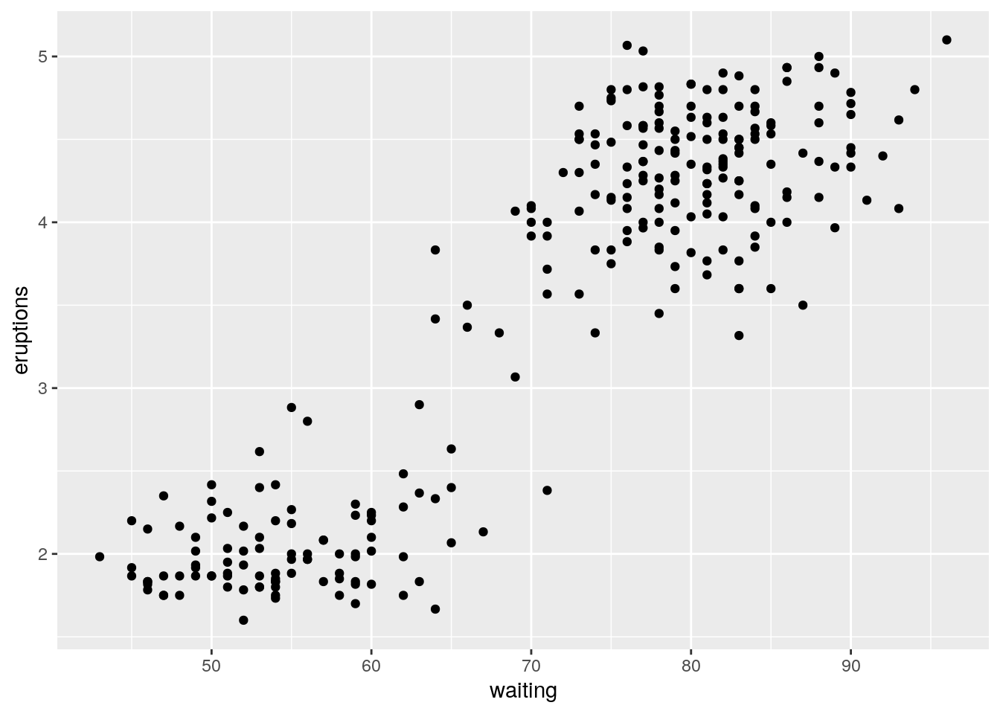
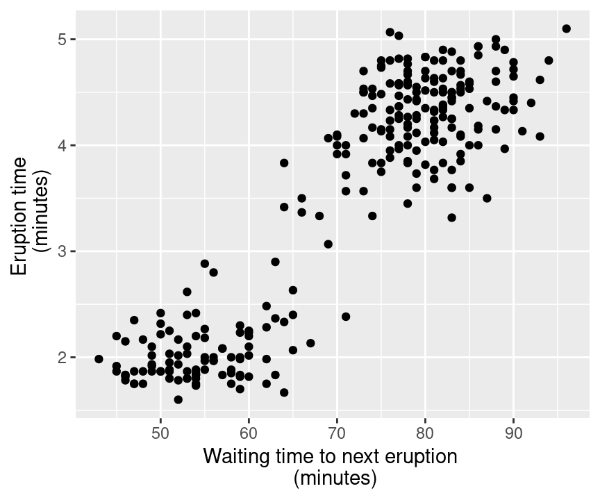

Chapter 4 Effective data visualization
4.1 Overview
This chapter will introduce concepts and tools relating to data visualization beyond what we have seen and practiced so far. We will focus on guiding principles for effective data visualization and explaining visualizations independent of any particular tool or programming language. In the process, we will cover some specifics of creating visualizations (scatter plots, bar charts, line graphs, and histograms) for data using R.
There are two external references that contain a wealth of additional information on the topic of data visualization: see the Fundamentals of Data Visualization by Professor Claus Wilke for more details on general principles of effective visualizations, and see Grolemund & Wickham’s R for Data Science chapter on creating visualizations using ggplot2 for a deeper introduction into the syntax and grammar of plotting with ggplot2 specifically.
4.2 Chapter learning objectives
REVISIT THESE WHEN DONE CHAPTER
- Define the three key aspects of ggplot objects:
- aesthetic mappings
- geometric objects
- scales
- Use the
ggplot2function in R to create the following visualizations:- 2-D scatter plot with/without a third variable that stratifies groups
- 2-D line graphs with/without a third variable that stratifies groups
- various bar charts (count, proportion, stacked) for multiple groups
- Given a dataset and a description of a claim, select from the above plot types to create a visualization that justifies the claim
- Given a visualization and a description of a claim, evaluate its effectiveness and suggest ways to improve the visualization to better support the claim
- List the rules of thumb for effective visualizations
4.3 Choosing the visualization
Ask a question, and answer it
The purpose of a visualization is to answer a question about a dataset of interest. So naturally, the first thing to do when creating a visualization is to formulate the question about the data that you are trying to answer. A good visualization will answer your question in a clear way without distraction; a great visualization will suggest even what the question was itself without additional explanation. Imagine your visualization as part of a poster presentation for your project; even if you aren’t standing at the poster explaining things, an effective visualization will be able to convey your message to the audience.
As with all coding tasks, it is totally fine (and quite common) to make mistakes and iterate a few times before you find the right visualization for your data. There are many different kinds of plotting graphic available to use. For the kinds we will introduce in this course, the general rules of thumb are:
- line plots visualize trends with respect to an independent quantity (e.g. time)
- histograms visualize the distribution of data on one axis
- scatter plots visualize the relationship between two quantitative variables, and can also be used to visualize the distribution of data on two axes
- bar plots visualize comparisons of amounts
The rest of the section will cover examples of how to choose a visualization given a dataset and a question that you want to answer, and then how to create the visualization in R using ggplot2.
4.3.1 The Mauna Loa CO2 dataset
This dataset contains the atmospheric concentration of carbon dioxide (CO2, in parts per million) at the Mauna Loa research station in Hawaii from the years 1959-1997:
# mauna loa carbon dioxide data
# (with some light wrangling to make it a dataframe with informative column names)
co2_df <- data.frame(concentration = as.matrix(co2), date = time(co2))
head(co2_df)## concentration date
## 1 315.42 1959.000
## 2 316.31 1959.083
## 3 316.50 1959.167
## 4 317.56 1959.250
## 5 318.13 1959.333
## 6 318.00 1959.417Question: Does the concentration of atmospheric CO2 change over time, and are there any interesting patterns to note?
Since we are investigating a relationship between two variables (CO2 concentration and time), it may be a good idea to use a scatter plot. Scatter plots show the data as individual points with x (horizonal axis) and y (vertical axis) coordinates. Here, we will set the x coordinate to time, and the y coordinate to concentration.
In ggplot2, we create the plot with the function ggplot. The first argument is the dataframe we are working with (here co2_df), and the second (here aes(x = date, y = concentration)) tells the plot what to put on the x axis and what to put on the y axis. Finally, we tell the plotting code to display the information as a scatter using the geom_point function. There are many other possible arguments to pass to the ggplot2 functions, but for the purposes of quickly testing things out to see what they look like, we can just go with the default settings:
co2_scatter <- ggplot(co2_df, aes(x = date, y = concentration)) + geom_point() 
Certainly the visualization shows a clear (and quite depressing) upward trend in the atmospheric concentration of CO2 over time. This plot answers the first part of our question in the affirmative, but that appears to be the only conclusion one can make from the scatter visualization. However, since time is an ordered quantity, we can try using a line plot instead using the geom_line function. Line plots require that the data are listed in order, and connect the sequence of x and y coordinates with line segments. Let’s again try this with just the default arguments:
co2_line <- ggplot(co2_df, aes(x = date, y = concentration)) + geom_line() 
Aha! There is another interesting phenomenon in the data: in addition to increasing over time, the concentration seems to oscillate as well. Given the visualization as it is now, it is still hard to tell how fast and how large in amplitude the oscillation is, but nevertheless, the line seems to be a better choice for answering the question than the scatter plot was. The comparison between these two visualizations illustrates a common issue with scatter plots: often the points are shown too close together or even on top of one another, muddling information that would otherwise be clear (overplotting).
4.3.2 The Old Faithful eruption / waiting time dataset
This dataset contains measurements of the waiting time between eruptions and the subsequent eruption duration (in minutes):
# old faithful eruption time / wait time data
head(faithful)## eruptions waiting
## 1 3.600 79
## 2 1.800 54
## 3 3.333 74
## 4 2.283 62
## 5 4.533 85
## 6 2.883 55Question: Is there a relationship between the waiting time before an eruption to the duration of the eruption? Also, would it be possible to use the current time since the last eruption to predict the duration of the next eruption?
Here again we are investigating the relationship between two quantitative variables (waiting time and eruption time). A scatter plot sounds like a good place to start:
faithful_scatter <- ggplot(faithful, aes(x = waiting, y = eruptions)) + geom_point() 
4.3.3 The island landmass dataset
This dataset contains a list of Earth’s land masses as well as their area (in thousands of square miles):
# islands data
# (with some light wrangling to make it a dataframe with informative column names)
islands_df <- enframe(islands)
colnames(islands_df) <- c('landmass', 'size')
head(islands_df)## # A tibble: 6 x 2
## landmass size
## <chr> <dbl>
## 1 Africa 11506
## 2 Antarctica 5500
## 3 Asia 16988
## 4 Australia 2968
## 5 Axel Heiberg 16
## 6 Baffin 1844.3.4 The Michelson speed of light dataset
This dataset contains measurements of the speed of light (in kilometers per second with 299,000 subtracted) for 5 experiments, each with 20 runs:
# michelson morley experimental data
head(morley)## Expt Run Speed
## 001 1 1 850
## 002 1 2 740
## 003 1 3 900
## 004 1 4 1070
## 005 1 5 930
## 006 1 6 850Question: How accurate are all the experiments?
morley_hist <- ggplot(morley, aes(x = Speed)) + geom_histogram() morley_hist2 <- ggplot(morley, aes(x = Speed, fill= Expt)) + geom_histogram(position='identity', alpha=0.2) 

4.3.5 The tooth growth dataset
This dataset contains measurements of the length of odontoblasts (cells responsible for tooth growth) in 60 guinea pigs given different dose levels of vitamin C (in milligrams per day) in different forms (ascorbic acid or orange juice):
# effect of vitamin C on guinea pig tooth growth
head(ToothGrowth)## len supp dose
## 1 4.2 VC 0.5
## 2 11.5 VC 0.5
## 3 7.3 VC 0.5
## 4 5.8 VC 0.5
## 5 6.4 VC 0.5
## 6 10.0 VC 0.5All types of visualization have their (mis)uses, but there are three kinds that are usually hard to understand or are easily replaced with an oft-better alternative. In particular you should avoid pie charts; it is usually better to use bars, as it is easier to compare bar heights than pie slice sizes. You should also not use 3-D visualizations, as they are typically hard to understand when converted to a static 2-D image format. Finally, do not use tables to make numerical comparisons; humans are much better at quickly processing visual information than text and math. Bar plots are again typically a better alternative.
ask a question try to use different plots to answer the question choose the
4.4 Refining the visualization
Maximize the signal-to-noise ratio
Just being able to make vizualizations in R with ggplot2 (or any other tool for that matter) doesn’t mean that your vizualization is effective at communicating to others what you are trying to communicate. There is a large body of research behind what makes effective visualizations,
Maximize signal
- make sure your information conveys your point
- Use legends and labels so that your visualization is understandable without reading the surrounding text
- Ensure the text, symbols on your visualization is big enough to be easily read
- Don’t adjust the axes to zoom in on small differences (if the difference is small, show that its small!)
- use good colour palette
Minimize noise
- Use colors sparingly (too many different colors can distract and even create false patterns)
- Be wary of overplotting (if your plot has too many dots or lines and it starts to look like a mess, then you need to do something different)
- Only make the plot area (where the dots, lines, bars are) as big as needed (simple plots can, and should be quite small)
- Show the data (don’t hide the shape/distribution of the data behind a bar)
4.5 Explaining the visualization
Tell a story
remember the types of data question, only explain what you can
4.6 Saving the visualization
Choose the right output format for your needs
Just as there are many ways to store datasets, there are many ways to store visualizations and images. Which one you choose can depend on a number of factors, such as file size/type limitations (e.g., if you are submitting your visualization as part of a conference paper or to a poster printing shop) and where it will be displayed (e.g., online, in a paper, on a poster, on a billboard, in talk slides). Generally speaking, images come in two flavours: bitmap (or raster) formats and vector (or scalable graphics) formats.
Bitmap / Raster images are represented as a 2-D grid of square pixels, each with their own colour. Raster images are often compressed before storing so they take up less space. A compressed format is lossy if the image cannot be perfectly recreated when loading and displaying, with the hope that the change is not noticeable. Lossless formats, on the other hand, allow a perfect display of the original image.
Vector / Scalable Graphics images are represented as a collection of mathematical objects (lines, surfaces, shapes, curves). When the computer displays the image, it redraws all of the elements using their mathematical formulas.
- Common file types: SVG (
.svg) and EPS (.eps), both for general purpose use (although SVG is much more common these days) - Free Editing software: Inkscape, Boxy SVG
Raster and vector images have opposing advantages and disadvantages. A raster image of a fixed width / height takes the same amount of space and time to load regardless of what the image shows (caveat: the compression algorithms may shrink the image more or run faster for certain images). A vector image takes space and time to load corresponding to how complex the image is, since the computer has to draw all the elements each time it is displayed. For example, if you have a scatter plot with 1 million points stored as an SVG file, it may take your computer some time to open the image. On the other hand, you can zoom into / scale up vector graphics as much as you like without the image looking bad, while raster images eventually start to look “pixellated.”
PDF files: The portable document format PDF (
Let’s investigate how different image file formats behave with a scatter plot of the Old Faithful dataset, which happens to be available in base R under the name faithful:
library(tidyverse)
library(svglite) #we need this to save SVG files
faithful_plot <- ggplot(data=faithful, aes(x=waiting, y=eruptions))+
geom_point()
print(faithful_plot)
ggsave('faithful_plot.png', faithful_plot)
## Saving 7 x 5 in image
ggsave('faithful_plot.jpg', faithful_plot)
## Saving 7 x 5 in image
ggsave('faithful_plot.bmp', faithful_plot)
## Saving 7 x 5 in image
ggsave('faithful_plot.tiff', faithful_plot)
## Saving 7 x 5 in image
ggsave('faithful_plot.svg', faithful_plot)
## Saving 7 x 5 in image
print(paste("PNG filesize: ", file.info('faithful_plot.png')['size']/1000000, "MB"))
## [1] "PNG filesize: 0.078717 MB"
print(paste("JPG filesize: ", file.info('faithful_plot.jpg')['size']/1000000, "MB"))
## [1] "JPG filesize: 0.139231 MB"
print(paste("BMP filesize: ", file.info('faithful_plot.bmp')['size']/1000000, "MB"))
## [1] "BMP filesize: 3.148978 MB"
print(paste("TIFF filesize: ", file.info('faithful_plot.tiff')['size']/1000000, "MB"))
## [1] "TIFF filesize: 9.443892 MB"
print(paste("SVG filesize: ", file.info('faithful_plot.svg')['size']/1000000, "MB"))
## [1] "SVG filesize: 0.046627 MB"Wow, that’s quite a difference! Notice that for such a simple plot with few graphical elements (points), the vector graphics format (SVG) is over 100 times smaller than the uncompressed raster images (BMP, TIFF). Also note that the JPG format is twice as large as the PNG format, since the JPG compression algorithm is designed for natural images (not plots). Below, we also show what the images look like when we zoom in to a rectangle with only 3 data points. You can see why vector graphics formats are so useful: because they’re just based on mathematical formulas, vector graphics can be scaled up to arbitrary sizes. This makes them great for presentation media of all sizes, from papers to posters to billboards.


faithful, raster (PNG, left) and vector (SVG, right) formats.